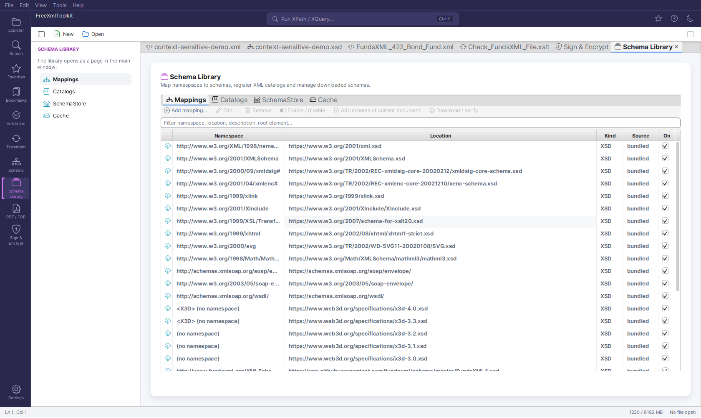
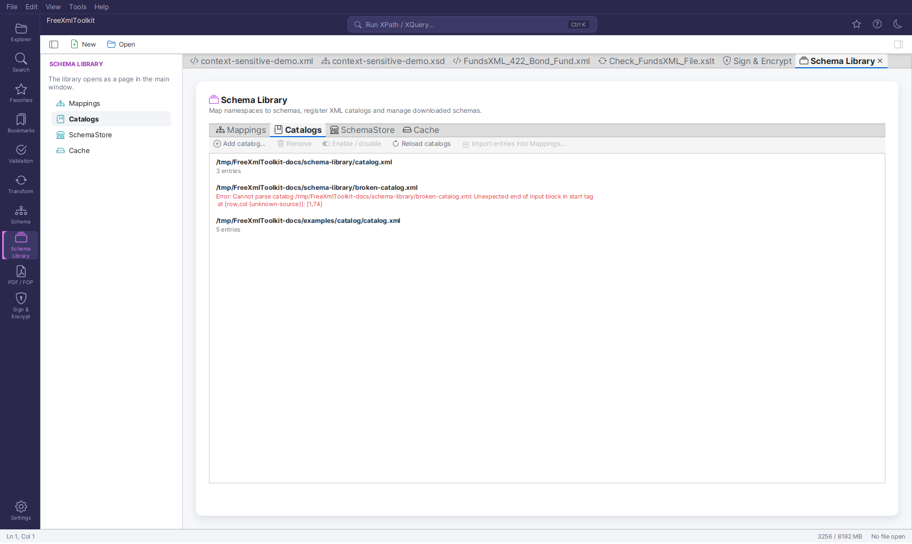
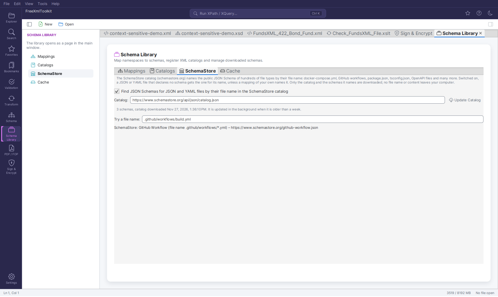

Schema Library¶
The Schema Library maps namespaces, JSON $schema URIs and file names to schema files, so
documents that don't carry an explicit reference to their schema can still be validated
and get IntelliSense automatically.
Where to find it: click Schema Library in the activity bar. The library opens as a page - a tab named Schema Library in the main editor area, just like Settings - with four tabs: Mappings, Catalogs, SchemaStore and Cache. The side panel on the left lists the same four sections: click one to jump to its tab; the tab you are on is highlighted. A shared status line at the bottom of the page reports the outcome of the last action. The Properties inspector is hidden while the page is selected, so the tables get the full width.
1. What the Schema Library is¶
A mapping connects a namespace - or, for no-namespace XSDs, a root element name - to a
schema location: a local file path or an http(s) URL. The library draws mappings from
three sources, tried in this order:
- Your mappings - entries you added yourself (the Mappings tab, source
USER). - XML catalogs - OASIS
catalog.xmlfiles you registered (the Catalogs tab). - Bundled standards - 25 well-known W3C/OASIS/industry schemas shipped with the application (see Bundled standards).
The first match wins, and a schema you bind manually in the Validation panel or status bar always takes priority over anything the library resolves.
The status bar's schema indicator shows how the active binding was resolved: a plain
XSD: invoice.xsd for a schema the document declared itself, XSD: invoice.xsd (catalog)
for one an XML catalog entry redirected to, XSD: invoice.xsd (library) for one a Schema
Library mapping supplied, and XSD: invoice.xsd (manual) for one you picked by hand; hover
the indicator for the resolved location and, for catalog/library bindings, the matched
namespace or catalog target.
The library is consulted whenever a document needs a schema but doesn't say which one:
- XML auto-binding - a document without
xsi:schemaLocation/xsi:noNamespaceSchemaLocationis looked up by its root element's namespace, or (for no-namespace schemas) by the root element's local name. xs:import/xs:includeresolution - during validation, in the XSD editor, and in the legacy schema parser, an import or include that can't be resolved locally is looked up by its namespace or system ID.- JSON
$schemaURIs - a JSON document's$schemamember that isn't a plain local/HTTP reference resolves through the library. Meta-schema ids (json-schema.org/...) are not bundled, so a JSON schema document still binds nothing - but you can map one yourself as aUSERentry if you want schema documents validated against their dialect. - JSON and YAML files by their name - a JSON or YAML file that declares no schema gets the JSON Schema whose file names match it: from your own mappings first, then (when switched on) from the SchemaStore catalog. See below.
- XSLT/XQuery
doc()/document()- a system ID the engine can't resolve directly falls back to the library (and catalogs) the same way.
The Schema Library page¶
The Schema Library activity (icon: collection) manages namespace → schema mappings used to auto-bind XML, XSD and JSON documents that don't carry an explicit schema reference. Like Settings, it opens as a page - a tab named Schema Library in the main editor area, where all table columns fit. The page has three tabs - Mappings, Catalogs and Cache - each with clearly labelled action buttons, and a shared status line at the bottom. The side panel on the left lists the same three sections: click one to jump to that tab; the tab you are on is highlighted. Settings → Schemas & Validation → SCHEMA LIBRARY → Manage schema cache… opens the page directly on the Cache tab. See the Schema Library guide for the full reference, including the resolution order, the bundled standards list and troubleshooting.
2. Mappings tab¶


The table has one row per mapping: a status icon, Namespace (or <root> (no namespace)
for root-element mappings), Location, Kind (XSD or JSON_SCHEMA), Source
(user, catalog or bundled) and an On checkbox to enable/disable the row
without deleting it. All columns are visible. The filter field searches namespace, location, description and root element.
Bundled rows render in italics and can only be enabled/disabled, never edited or removed.
| Icon | Status | Meaning |
|---|---|---|
| ✔ | Available | The schema file exists locally, or its remote copy is already cached |
| ☁ | Not downloaded yet | A remote schema that hasn't been fetched yet |
| ⚠ | File missing | A local path that no longer exists on disk |
| ✖ | Error | The last download/verification attempt failed (hover for the error message) |
The labelled buttons above the table: Add mapping… and Edit… open the mapping dialog (namespace,
location, kind, optional root element, optional file names, description); Remove deletes a USER mapping;
Enable / disable toggles the On column for the selected row; Add schema of
current document prefills a new mapping from the active document's bound schema; and
Download / verify materializes a remote entry immediately (also clearing a remembered
failure, see Troubleshooting). Double-clicking a row opens the
resolved schema file as an editor tab; the context menu offers the same Open schema,
Edit…, Remove and a Copy namespace action.
File names (JSON and YAML)¶
A JSON Schema mapping can name the files it is for, in the dialog's File names field,
separated by commas: docker-compose*.yml, compose.yaml or .github/workflows/*.yml. A JSON or
YAML file whose text declares no schema (no $schema, no # yaml-language-server: $schema=
comment) then gets this schema for validation, completion and hover help. Such a mapping needs no
namespace. The rules are those of the SchemaStore catalog and the YAML language server:
| Pattern | Matches |
|---|---|
docker-compose.yml |
a file of that name in any folder (no /: only the name counts) |
docker-compose*.yml, *.{yml,yaml}, ?.json, [ab].json |
* within a name, {a,b} alternatives, ? one character, [..] a character class |
.github/workflows/*.yml |
with a /, the end of the path, whole folders: repo/.github/workflows/ci.yml, not …/workflows/sub/ci.yml |
.github/**/*.yml |
** spans any number of folders |
!**/test/** |
a leading ! excludes what it matches |
Case does not matter. When several mappings match, the most specific pattern wins (the one with
the most characters that are not wildcards: docker-compose.yml before *.yml). The Mappings
table shows the patterns after the namespace ((files: …)), and the filter searches them.
The order of the schema search for a JSON or YAML file: a project binding, the
schema the file declares, a mapping by file name, the SchemaStore catalog.
3. XML catalogs¶


The Catalogs tab registers OASIS catalog.xml files and supports the core catalog
elements: system, public, uri, rewriteSystem, rewriteURI, nextCatalog and
xml:base. Catalogs are parsed without any network access - nextCatalog is only
followed for local files, with cycle protection and a depth cap of 10.
During validation a reference is looked up by its system identifier first, then by its
public identifier (public entries), and finally by namespace. public entries are
therefore honoured for schema resolution even though they cannot be imported into the
Mappings tab (a public identifier is not a namespace).
The tab's labelled buttons:
- Add catalog… registers a
catalog.xmlfile; Remove unregisters it (the file itself is untouched); Enable / disable toggles it without removing it; Reload catalogs re-parses every registered catalog (useful after editing one by hand). - Each row shows either the parsed entry count or, if the file is missing/invalid, a red error message.
- Import entries into Mappings… converts the catalog's
system/urientries into regular Mappings-tab entries: a preview dialog lists what would be imported, with entries that already exist (by namespace/kind) shown disabled so you don't create duplicates. - Double-click a catalog row to open the
catalog.xmlfile itself as an editor tab.
Example catalog mapping the bundled X3D 4.0 namespace to a local copy:
<?xml version="1.0"?>
<catalog xmlns="urn:oasis:names:tc:entity:xmlns:xml:catalog">
<uri name="http://www.web3d.org/specifications/x3d-4.0.xsd"
uri="schemas/x3d-4.0.xsd"/>
</catalog>
Try it: the shipped catalog example¶
release/examples/catalog/ contains a complete, self-contained demo: an invoice schema that
imports shared types from the non-existent host schemas.example.org, a catalog.xml
(with system, rewriteSystem, public and a chained nextCatalog) that maps every such
reference to the local schemas/ folder, and three instance documents — one with an
unreachable xsi:schemaLocation, one with only a namespace, one with deliberate errors.
Register catalog.xml in the Catalogs tab, open the documents and validate; the folder's
README.md walks through each step.
4. SchemaStore¶


The SchemaStore catalog names the public JSON Schema of hundreds of
file types by their file name: docker-compose.yml, GitHub workflows and actions, package.json,
tsconfig.json, .gitlab-ci.yml, OpenAPI and AsyncAPI files, Ansible, Helm charts and many more.
On the SchemaStore tab:
- Find JSON Schemas for JSON and YAML files by their file name in the SchemaStore catalog - off
by default. Switched on, the catalog is downloaded once, kept in
~/.freeXmlToolkit/schemastore/and updated in the background when it is older than a week. A JSON or YAML file that declares no schema and matches none of your mappings gets the catalog's schema for its name; the schema itself is downloaded on first use and cached like every remote schema (Cache tab). Only the catalog and the schemas it names are downloaded; no file name or content leaves your computer. The status bar shows such a binding as(library), its tooltip names the catalog entry and the pattern. - Catalog - the catalog's address; point it at a mirror inside your network if the public site is not reachable. Update Catalog downloads it now.
- Try a file name - type a name or path (
.github/workflows/build.yml) to see which schema it gets: one of your mappings, the catalog's, or none.
Your own mapping always wins over the catalog, so you can replace a catalog schema by a local copy:
add a mapping with the same file names. Administrators can switch the catalog off or fix its address
(schemastore.enabled, schemastore.catalogUrl, see Administration).
On the command line, fxt-cli validate uses your file-name mappings by itself and the catalog with
--schemastore, for example in a CI job: fxt-cli validate --schemastore .github/workflows
(see Command Line).
5. Schema cache¶

 The Cache tab: remote schemas downloaded and cached under
The Cache tab: remote schemas downloaded and cached under ~/.freeXmlToolkit/cache/schemas.
Every remote schema resolved through the library (or downloaded because a document
referenced it directly) is cached under ~/.freeXmlToolkit/cache/schemas. When a schema
imports or includes it, a copy is also saved next to that schema under its original name and
used from then on (see Automatic Resolution of Imported Schemas). The Cache tab
lists URL, Target namespace and file Size by default, with a filter over
URL/namespace, plus the Downloaded timestamp and Hits (access count) - all columns
are visible. The labelled buttons: Open cached file opens the cached file as an editor
tab; Show in system file manager shows the cache folder in your file manager;
Re-download fetches the selected entry again; Delete cached file removes one cached
file (re-downloaded on next use); Clear entire cache wipes the entire cache. A footer line reports the
total file count, total size and the cache hit ratio.
A collapsible "Auto-detected schemas (legacy cache)" group underneath holds the older,
separate cache of schemas auto-downloaded from xsi:schemaLocation references (one folder
per schema URL, keyed by an MD5 hash). It is read-only except for a Clear auto-detected
schema cache button; those
files are simply re-downloaded the next time a document references them.
6. Bundled standards¶
FreeXmlToolkit ships a curated list of 25 well-known namespace → schema mappings so common standards validate out of the box, without you having to hunt down and register the schema yourself. Bundled entries are grouped by family:
- W3C core -
xml(XML namespace attributes),XMLSchema(schema for schemas),xmldsig-core,xmlenc-core,XLink1.1,XInclude1.0, XSLT 2.0/3.0 stylesheet schema. - Markup - XHTML 1.0 Strict, SVG 1.1, MathML 3.
- Web services - SOAP 1.1 and 1.2 envelopes, WSDL 1.1.
- 3D graphics - X3D 3.0 through 4.0. X3D documents carry no namespace (they point at
their schema with
xsi:noNamespaceSchemaLocation), so these are no-namespace entries: 4.0 and 3.3 additionally declare the root elementX3Dand are found by auto-binding (4.0 is listed first and therefore wins); 3.0-3.2 are reached by their location whenever a document or anxs:importnames that URL. - Finance/industry - FundsXML 4, XBRL 2.1 (instance + linkbase), UBL 2.1 (Invoice, Order, CreditNote), UN/CEFACT Cross Industry Invoice D16B (ZUGFeRD/Factur-X).
The JSON Schema meta-schemas are deliberately not bundled: $schema in a JSON schema
document declares its dialect, not a validation binding, and a bundled meta-schema mapping
would bind every schema document to it. Add one as your own mapping if you want that.
The list itself lives in src/main/resources/schema-library/bundled.json. Bundled entries
are not downloaded at install time - like any remote mapping, the actual schema file is
fetched into the cache the first time it's needed, so a bundled entry needs network access
once before it shows the ✔ Available status.
Offline rule: a remote library entry is downloaded on first use only when remote
downloads are permitted. Starting the application with -Dfxt.schema.namespaceFallback=false
turns them off (the test suite does this) - resolution then uses local files and
already-cached copies only, and every other entry is simply a miss. Local entries and
cached entries always resolve, with or without network access.
7. Settings¶
The SCHEMA LIBRARY card in Settings (gear icon at the bottom of the activity bar, group Schemas & Validation) holds:
- "Use the Schema Library to bind schemas automatically" - controls automatic binding
in the editor only (default on): the XML root-namespace / root-element lookup and the
JSON
$schemalookup described in §1. Turning it off means a document without its own schema reference stays unbound. It does not switch the library off: the resolver hooks -xs:import/xs:includeresolution, XML catalogs and XSLT/XQuerydoc()/document()- keep consulting the library either way, and manual bindings are unaffected. - The library file location,
~/.freeXmlToolkit/schema-library.json, shown for reference. - A "Manage schema cache…" link that opens the Schema Library page directly on its Cache tab. The same link also appears in the TEMP & CACHE card (group Files & Cache).
8. Troubleshooting¶
A document isn't binding a schema I expect:
- Check the namespace actually matches - a typo or a trailing slash difference means no match. For no-namespace XSDs, the library matches by root element name instead.
- Make sure the mapping's On checkbox is checked; a disabled entry (including a disabled catalog) is skipped during resolution.
- Confirm the "Use the Schema Library to bind schemas automatically" setting is on (it
gates editor auto-binding only, not
xs:import/catalog resolution). - If the document already has a manually bound schema (or an
xsi:schemaLocation), that wins - the library is only consulted when there's no other reference.
A catalog shows a red error: the file is missing, unreadable, or not well-formed XML.
Fix the file and click Reload catalogs, or check the nextCatalog chain - only local
files are followed, and the depth is capped at 10.
A download keeps failing / the status stays ✖ error: hover the status icon for the error message. A failed download is remembered for 10 minutes to avoid hammering an unreachable server; use Download / verify on the Mappings tab to retry immediately.
A remote mapping never leaves ☁ "Not downloaded yet": remote downloads may be turned
off (-Dfxt.schema.namespaceFallback=false); with them off only local and already-cached
entries resolve. Use Download / verify to fetch one explicitly.
"URL is not allowed" when adding a mapping: the location resolves to a private or internal network address (loopback, link-local, RFC 1918 ranges, etc.) and is rejected as unsafe - remote schema locations must be reachable public URLs.
Next steps¶
- Validate
- Operation without internet - schemas in a closed network
- Projects & scenarios - bind schemas per file pattern